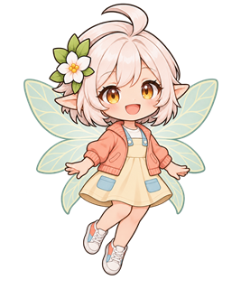

발걸음을 기록하다
경험치와 레벨 없이, 한 번의 달리기가 나만의 모험 기록으로 쌓입니다.
YOUR RUN, YOUR STORY
운동화 끈을 묶고 모험의 문을 열어보세요.
오늘의 한 걸음이 판타지 세계의 이야기가 됩니다.

함께 달릴 준비 됐나요?THE ADVENTURE BEGINS
달리는 길 위에서 나만의 모험가가 되어보세요.
슬라이더를 움직이면 2km 여정이 펼쳐집니다.
YOUR ADVENTURE PREVIEW
모험가의 모습을 불러오는 중이에요.
CHOOSE YOUR HERO
네 명의 모험가 중 마음이 끌리는 동료를 골라보세요.
선택한 모습은 위쪽 가상 여정에도 나타납니다.
CREATURES ON THE ROAD
평범한 러닝이 조금 더 흥미로워지는 순간.
도감에서 몬스터를 눌러 만나보세요.
THE FIRST ENCOUNTER
모험의 시작에서 만나는 첫 몬스터. 작고 말랑한 모습으로 러너를 맞이합니다.
MONSTER FIELD NOTES · 01MEET LUMI
작은 동료 루미가 모험의 곁을 지켜요.
버튼을 눌러 루미의 응원을 받아보세요.
오늘의 한 걸음도 멋진 모험이에요!
버튼을 누르면 AI 생성 응원 음성을 미리 들을 수 있어요.
MORE TO DISCOVER
모험을 기록하고, 나답게 꾸미고,
익숙한 도시를 새로운 눈으로 만나보세요.
경험치와 레벨 없이, 한 번의 달리기가 나만의 모험 기록으로 쌓입니다.
60종의 장비와 14종의 몬스터가 만들어가는 다채로운 세계.
서울 6개 권역과 12개 랜드마크를 배경으로 만나는 모험.